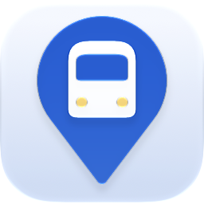

Drive, Train, Subway
Commuter plans the trip into New York City and back: drive or walk to the best Long Island Rail Road or Metro-North station, ride in, and take the subway or a bus to the door, with live MTA times and track numbers.
Take a screenshot in Commuter and choose Share Beta Feedback, or open TestFlight, choose Commuter, then Send Beta Feedback.
Report a problem or ask a question on GitHub. Say what you planned (the starting point, destination and time) and what you expected to see.
Around New York City: the Long Island Rail Road, Metro-North, the subway and the city's buses. From farther away, choose a starting point in that area.
So a trip you start can keep following you with Commuter closed, to see when you leave, reach the station and arrive, and to keep its alerts and Live Activity current. Notice Where I Park uses it too. With While Using, a started trip still works while Commuter is open, and iOS shows the location indicator.
Alerts come only for a trip you start. Check that notifications are on for Commuter in Settings, and which alerts are on in Commuter's Profile, under Alerts.
Schedules come from the MTA and update every day by default (Profile, Schedules). Live times update every 30 seconds while Commuter is open and can run a minute or more behind the trains.
Commuter is an independent app. It is not affiliated with, endorsed by or sponsored by the Metropolitan Transportation Authority (MTA), the Long Island Rail Road, Metro-North Railroad or New York City Transit.